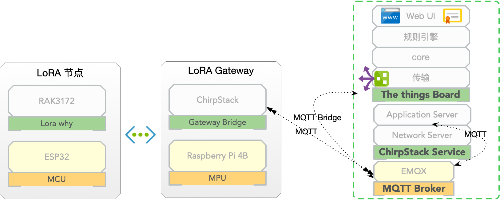

基于ESP32的LoRaWan节点通信#
实验目的#
lora节点与lorawan网关之间的通信
chirpstack平台管理与应用
chirpstack与thingsboard集成
实验方案#
所需软硬件#
lora节点：ESP32+ RAK3172
LORA 网关： RaspberryPi4 + RAK2275 + Chirpstack Gateway Bridge
Chirpstack 平台
网络方案#

chirpstack#
ChirpStack 是一个开源的物联网 (IoT) 应用和设备管理平台，旨在简化和加强物联网解决方案的开发和管理。它提供了一个端到端的解决方案，包括设备管理、应用程序开发、数据管理和集成。
ChirpStack 通过使用 LoRaWAN® 网络协议来连接和管理物联网设备。LoRaWAN 是一种低功耗、长距离无线通信协议，非常适用于物联网应用。ChirpStack 支持与多种 LoRaWAN 网络服务器进行集成，例如 Semtech 的 LoRa Server 和其他兼容的网络服务器。
ChirpStack 提供了一套功能强大的工具和界面，帮助开发者管理物联网设备。它包括以下主要组件：
网关管理器 (Gateway Bridge)：用于与物联网网关进行通信，接收从设备发送的数据，并将其传递给网络服务器。
网络服务器 (Network Server)：处理从设备和网关收到的数据，并负责验证和解析数据包。它还提供设备管理、设备活动监控和安全认证等功能。
应用服务器 (Application Server)：提供应用程序开发和集成的功能。它可以接收从设备发送的数据，并根据开发者定义的规则进行处理、存储和转发数据。开发者可以使用应用服务器来构建自定义的 IoT 应用程序和集成其他系统。
用户界面 (User Interface)：ChirpStack 提供了一个用户友好的界面，用于管理设备、应用程序和网络服务器的各个方面。开发者可以使用界面来监控设备的状态、配置应用程序和进行故障排除。
ChirpStack 的开源性质使得开发者可以自由地定制和扩展平台的功能，以满足特定的物联网解决方案需求。它支持多种操作系统和硬件平台，使得部署和集成变得更加灵活和可靠。
总而言之，ChirpStack 是一个功能强大的开源物联网平台，通过集成 LoRaWAN 网络协议，提供了完整的设备管理、应用程序开发和数据管理解决方案，帮助开发者构建可靠和可扩展的物联网应用。
实验步骤#
chirpstack地址：http://8.134.62.44:8081
添加网关#
进入到chirpstack UI ，然后：
Gateways|Add gateway
name
Gateway ID (如何获取 Gateway ID)
Submit
添加设备描述#
进入到chirpstack UI ，然后：
Device profiles | Add device profile，填写入下内容：Name
Regin：CN470
MAC Version：LoraWan 1.0.3
Regional parameters revision: A
ADR algorithm: Default
Submit
添加应用#
进入到chirpstack UI ，然后：
Applications | Add applicationname
Description
Submit
在应用中添加设备#
进入到chirpstack UI ，然后：
Application|「选择应用」|Add device|填写你的设备
填写Device EUI ,由
at+deveui=?获取。选择已经设置好的Device profile
submit
填写
application key，由at+appkey=?获取
加入Lorawan网络
at+join
发送数据
at+send=例如：
at+send=25:018806765ff2960a0003e8
接受数据
at+recv=?编码实现以上 join，send，receive过程。
集成到ThingsBoard#
进入thingsboard管理页面，添加设备，命名与上面在chirpstack的命名一致
获取该设备的访问令牌，即TOCKEN。
返回到chirpstack管理页面，添加应用集成
进入菜单
Applications | [设备所在的应用名称] | Integrations，找到Thingsboard，填写ThingsBoard server 为：http://8.134.62.44:8080
在chirpstack管理页面，添加上述设备访问令牌
进入相应的设备页面
Configuration | Variables | + add Variables填写如下键值对：
key: ThingsBoardAccessToken
Value: 刚才在thingsboard中复制的访问令牌
设置完成后，发送数据，在thingsboard设备的最新遥测数据中可观察到刚才发送的数据